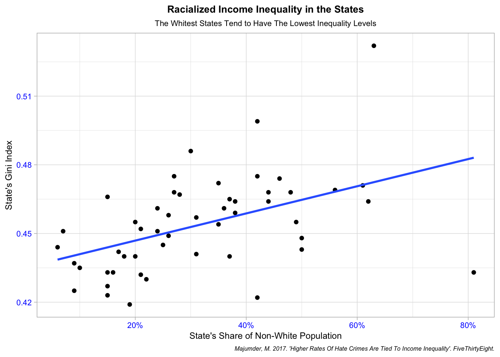
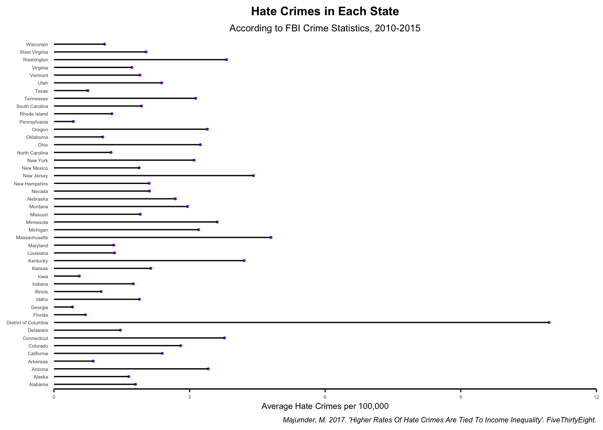

Quarto enables you to weave together content and executable code into a finished document. To learn more about Quarto see https://quarto.org.
Running Code
When you click the Render button a document will be generated that includes both content and the output of embedded code. You can embed code like this:
#load datalibrary(tidyverse)
── Attaching core tidyverse packages ──────────────────────── tidyverse 2.0.0 ──
✔ dplyr 1.1.2 ✔ readr 2.1.4
✔ forcats 1.0.0 ✔ stringr 1.5.0
✔ ggplot2 3.4.3 ✔ tibble 3.2.1
✔ lubridate 1.9.2 ✔ tidyr 1.3.0
✔ purrr 1.0.2
── Conflicts ────────────────────────────────────────── tidyverse_conflicts() ──
✖ dplyr::filter() masks stats::filter()
✖ dplyr::lag() masks stats::lag()
ℹ Use the conflicted package (<http://conflicted.r-lib.org/>) to force all conflicts to become errors
#alekhyahate_crimes <-read_csv(file ="/Users/alekhya/Desktop/03_ARC School/02 McCourt Year 2/Data Science/Assignment04/data/hate_crimes.csv")
Rows: 51 Columns: 12
── Column specification ────────────────────────────────────────────────────────
Delimiter: ","
chr (1): state
dbl (11): median_household_income, share_unemployed_seasonal, share_populati...
ℹ Use `spec()` to retrieve the full column specification for this data.
ℹ Specify the column types or set `show_col_types = FALSE` to quiet this message.
#graph of relationship between Trump voters and hate crimeslibrary(ggplot2)hate_crimes %>%ggplot(mapping =aes(x = share_voters_voted_trump, y = hate_crimes_per_100k_splc)) +geom_jitter(color ="blue", shape ="square") +geom_smooth(method ="lm", se =FALSE) +labs(y ="Hate Crimes per 100k Population", x ="Share of Voters who Voted Trump", title ="Hate Crimes are Less Common in Areas with High Proportions of Trump Voters", subtitle ="Polarized Areas See Higher Rates of Hate Crimes", caption ="Majumder, M. 2017. 'Higher Rates Of Hate Crimes Are Tied To Income Inequality'. FiveThirtyEight.") +theme(axis.text =element_text(size=8, color ="blue",hjust =0.5), plot.title =element_text(size=10, face ="bold", hjust =0.5),plot.subtitle =element_text(size=8, hjust =0.5),axis.title =element_text(size=9),plot.caption =element_text(size =6, face ="italic") ) +scale_x_continuous(labels = scales::percent)
library(tidyverse)library(readr)library(ggplot2)hate_crimes %>%ggplot(mapping =aes(x= share_non_white, y = gini_index, transparency =0.5)) +geom_point() +geom_smooth(method ="lm", se =FALSE) +theme_light() +labs(y ="State's Gini Index",x ="State's Share of Non-White Population",caption ="Majumder, M. 2017. 'Higher Rates Of Hate Crimes Are Tied To Income Inequality'. FiveThirtyEight.",title ="Racialized Income Inequality in the States",subtitle ="The Whitest States Tend to Have The Lowest Inequality Levels")+theme(axis.text =element_text(size=8, color ="blue",hjust =0.5), plot.title =element_text(size=10, face ="bold", hjust =0.5),plot.subtitle =element_text(size=8, hjust =0.5),axis.title =element_text(size=9),plot.caption =element_text(size =6, face ="italic") ) +scale_x_continuous(labels = scales::percent)
`geom_smooth()` using formula = 'y ~ x'

hate_crimes %>%na.omit(hate_crimes_per_100k_splc) %>%ggplot(aes(x= state,y= avg_hatecrimes_per_100k_fbi))+geom_point(color="purple", size=.5, alpha=1) +geom_segment(aes(x=state, xend=state, y=0, yend=avg_hatecrimes_per_100k_fbi)) +scale_y_continuous(expand =expansion(mult =c(0,0)), limits =c(0, 12)) +theme_classic() +coord_flip() +labs(x =NULL, y ="Average Hate Crimes per 100,000",title ="Hate Crimes in Each State",subtitle ="According to FBI Crime Statistics, 2010-2015",caption ="Majumder, M. 2017. 'Higher Rates Of Hate Crimes Are Tied To Income Inequality'. FiveThirtyEight.", ) +theme(axis.text=element_text (size=4),plot.caption =element_text(size =6, face ="italic"),axis.line.y =element_line(color ="transparent"),axis.ticks.y =element_blank(),plot.title=element_text(size=10, face ="bold", hjust = .5),plot.subtitle=element_text(size =8,hjust = .5),axis.title=element_text(size=7), )

The echo: false option disables the printing of code (only output is displayed).
library(tidyverse)library(readr)library(ggplot2)hate_crimes %>%ggplot(mapping =aes(x = avg_hatecrimes_per_100k_fbi))+geom_histogram(binwidth = .5, fill ="darkgreen", color ="darkgray") +labs(y ="Count of States",x ="Average Hate Crimes Per 100k",caption ="Majumder, M. 2017. 'Higher Rates Of Hate Crimes Are Tied To Income Inequality'. FiveThirtyEight.",title ="Most States Have Hate Crimes Rates of .5 to 3 per 100k" ) +theme(axis.text=element_text (size=4),plot.caption =element_text(size =6, face ="italic"),axis.line.y =element_line(color ="transparent"),axis.ticks.y =element_blank(),plot.title=element_text(size=10, face ="bold", hjust = .5),plot.subtitle=element_text(size =8,hjust = .5),axis.title=element_text(size=7) )
“Hate Crimes Are Common in Polarized States”: This graph shows the relationship between the proportion of Trump voters in a given state and the number of hate crimes per 100K people committed in that state. We might hypothesize that there would be a higher rate of hate crimes in states dominated by Trump voters, but in fact this graph illustrates that hate crimes are more prevalent in states where 40%-50% of voters support Trump. In other words, hate crimes are more prevalent in states that have a greater degree of political polarization, compared to states with a higher percentage of Trump voters. We also see an outlier in the District of Columbia, which has a very low percent of Trump voters (4%) but a high rate of hate crimes (1.5 per 100K). This is likely due to the fact that DC has a much smaller population size than most states, but a relatively high number of hate crimes compared to other small states.